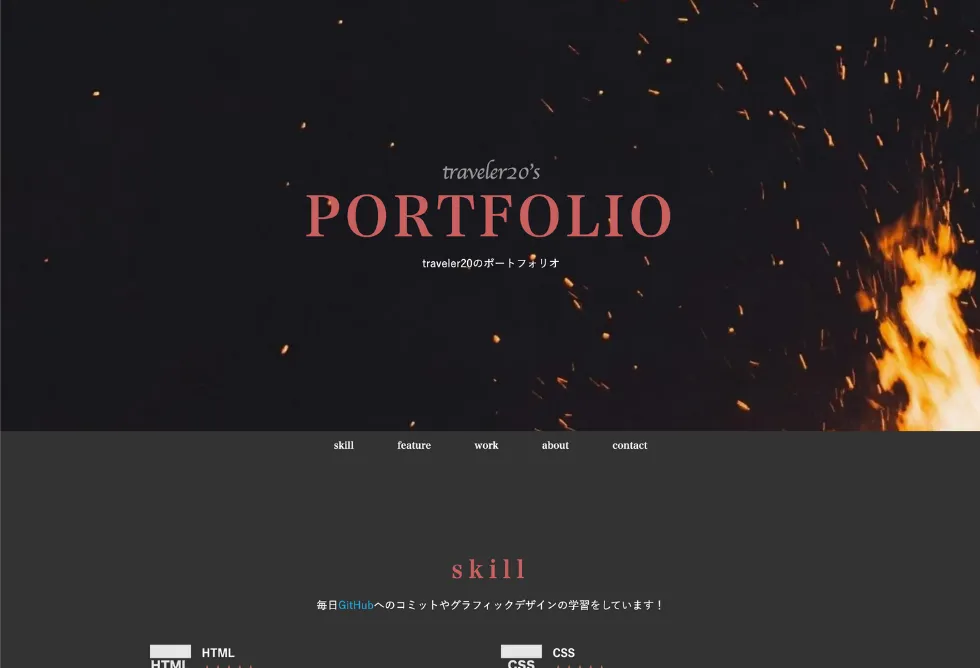

skill
毎日GitHubへのコミットやグラフィックデザインの学習をしています！
-

- HTML
-
このサイトのようなコーディングが可能です。HTML/CSS/JavaScriptでスライドやアコーディオン等の機能を実装することも可能。
-
- CSS
-
CSSを用いたサイトデザインが可能。マウスカーソルやスクロールバー等のスタイリングも実装経験あり。
-

- JavaScript
-
オブジェクトにアニメーションなどの動きをつけることが可能。また、簡易なWebアプリケーションの作成もできます。
-
- PHP
-
HTMLに組み込んでタイマー設定や自動キャッシュ対策の実装が可能です。DBとの接続については学習中。
-
- WordPress
-
WordPressを用いたサイト制作・運用が可能です。サーバやドメインの設定からサイトの運用、LPの組み込みまで経験があります。
-

- photoshop/illustrator
-
アイコンやバナーの作成が可能。また、デザイナーのコミュニティにてIllustratorでアイコンを制作する勉強会を主催した経験あり。
-

- XD/Figma
-
WEBサイトのデザインカンプ作成経験あり。UI/UXを配慮したデザインが可能です。またコーディングまで一貫した業務経験があります。
-

- Passion
-
毎日学習しています！！

work
その他の制作実績になります。
-

WEBサイト1 - WEBサイト1
- WEBサイト1の文章です！
✖ -
WEBサイト2 - WEBサイト2
- WEBサイト2の文章です！
✖ -
WEBサイト3 - WEBサイト3
- WEBサイト3の文章です！
✖
-
-

- 
about
こんにちは！traveler20です。

WEBデザイナー・WEBディベロッパー
2020年3月に大学を卒業。4月からWeb系企業に入社予定も、新型コロナウイルスの影響により内定取り消しになりました。その後派遣社員としてWEB系のコーディング業務に従事。2021年11月より株式会社エス・エム・エスにて正社員WEBデザイナーとして就業開始しました。
デザインからコーディングまで一貫した業務が可能です！このポートフォリオサイトも自身でデザイン・制作しました。